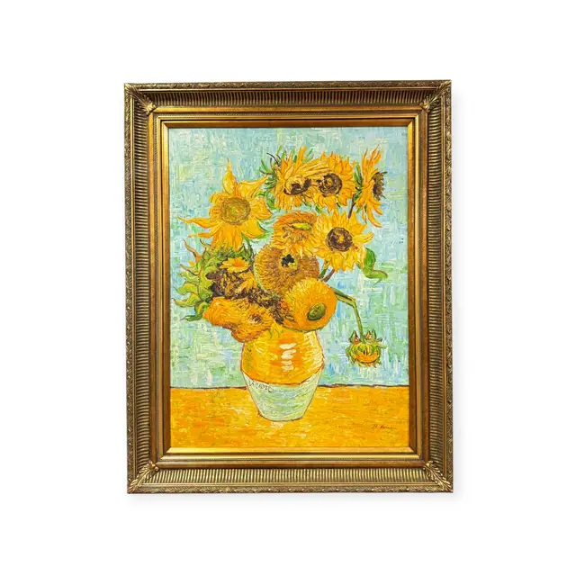
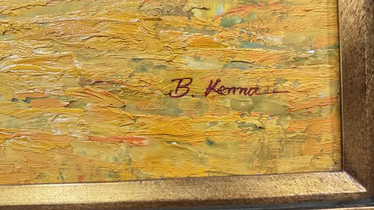
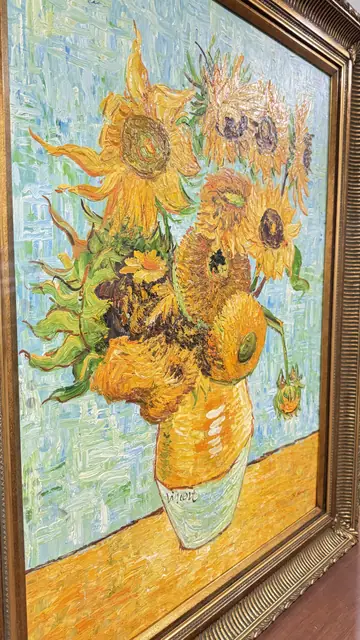
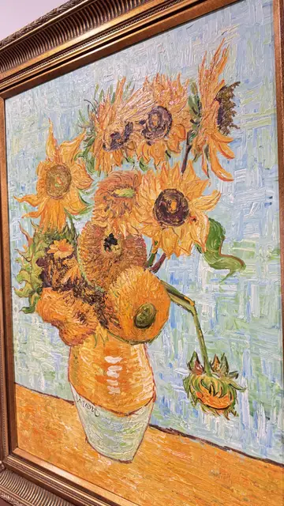
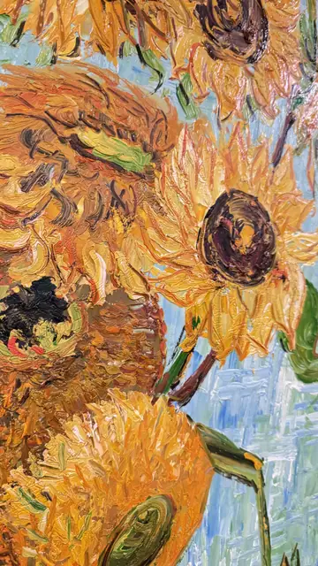
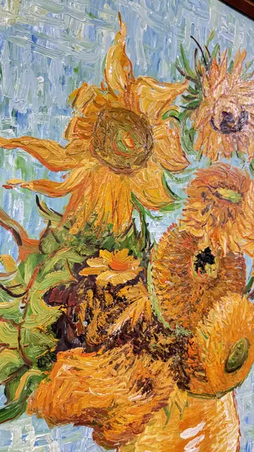

Paintings & Prints
Sunflowers in a Vase After Van Gogh, B. Kenna, Signed, Framed
B. Kenna · late 20th century
Price Upon Request






About the Item
B. Kenna. A full-scale painted copy of Van Gogh's Sunflowers, worked in very heavy impasto with a loaded brush and palette knife so the petals stand off the canvas in ridges. Chrome yellow, orange and russet flowers, some in full face and some spent and drooping, rise from a two-tone cream vase set on a broad orange table against a pale blue-green wall built from short choppy strokes. The colour is high-keyed and the handling frankly gestural, with visible ridges catching the light across the whole surface. Housed in a heavy ornate gilt-composition frame with fluted and acanthus-leaf ornament. Medium: oil on canvas. Signed lower right of the canvas, in dark red, reading "B. Kenna". Inscribed on the reverse or mount: B. Kenna. Condition: No tears or losses visible; some rubbing and small chips to the gilt frame ornament. Paint surface appears sound.
Details
- Creator:
- B. Kenna
- Creation Year:
- late 20th century
- Dimensions:
- Height: 48.9 in (124.21 cm)
Width: 38.5 in (97.79 cm)
outside of frame - Medium:
- oil on canvas
- Period:
- 20Th
- Condition:
- Offered in the condition shown in the photographs.
- Reference Number:
- VO-68
- Documentation:
- no certificate photographed
- Gallery Location:
- B. Kenna